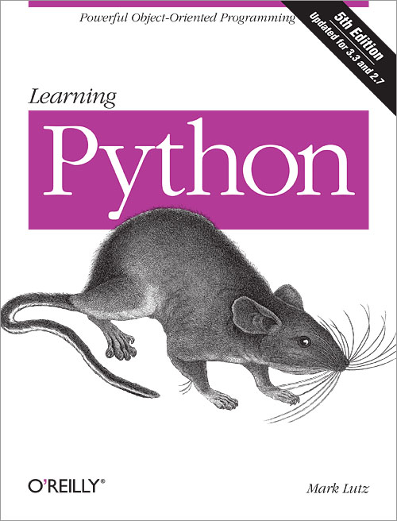
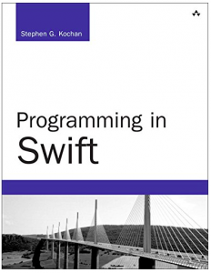
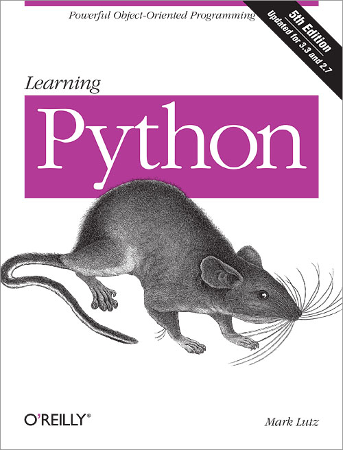
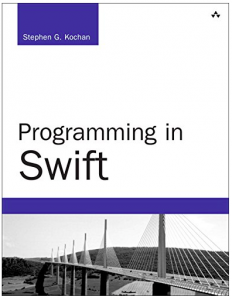
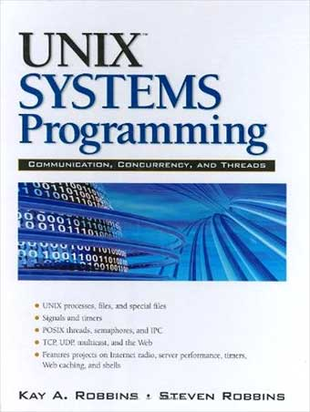
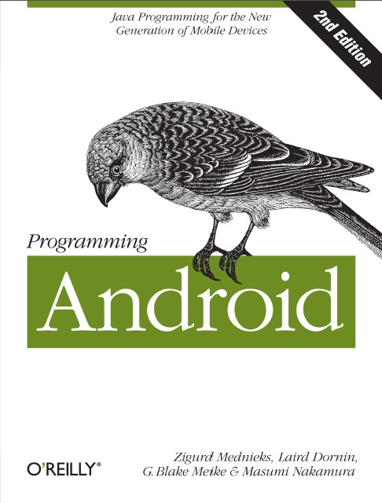
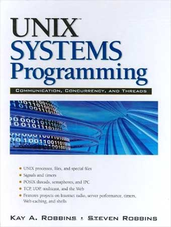
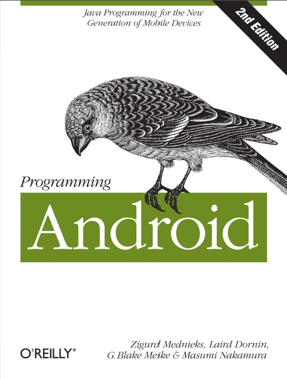
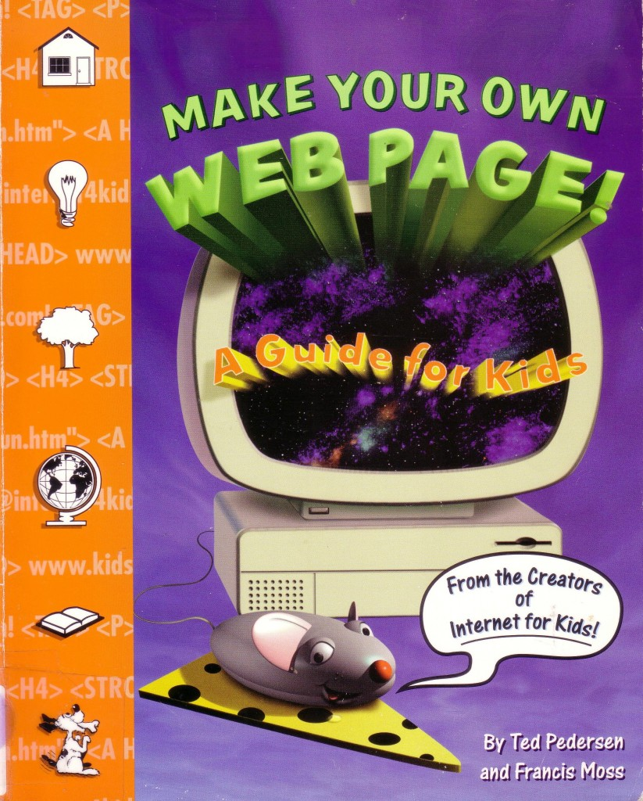
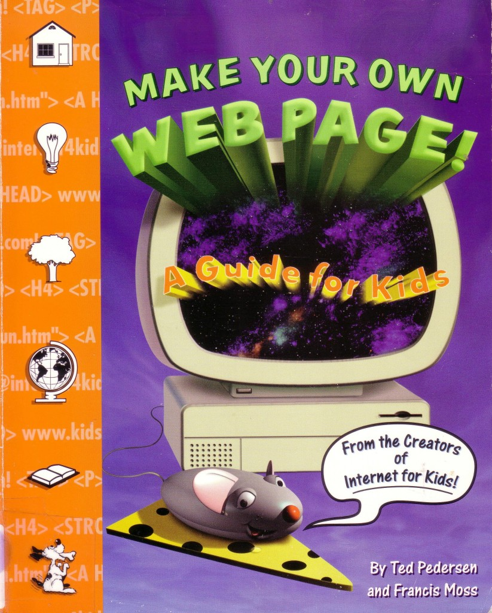

 



 

This Article For C++
INTRODUCTION Back in the late 1990s I was having trouble with a Borland Turbo C++ version 3.1 programming issue to make a Windows form auto-calculate after tabbing out of a numerical text box. In the early 1990s when I coded MS-DOS based procedural C application development, I could call Borland's technical support line and they would help me out free of charge. By the time I had this particular problem though, everything had changed for the worse. They had a 900 number I had to call for technical support. It was very expensive - $5USD per minute. Ouch! Their technical support people wouldn't even speak to me until I gave them my credit card number and they had authorized it. I sent them one fax about my problem and another and then another after that, because they kept losing them. Not only did they not solve my problem, but they also had the nerve to charge my credit card $92USD just for the time they spent running around trying to find my faxes. I was absolutely livid - this was the high watermark of aggravation for me. THE ISSUE I HAD The custom software work I did typically involved invoicing or order entry. The Windows form had to automatically recalculate the extended prices as well as totals. I knew how to do this with my old MS-DOS based programs. However, I was having a real tough time making this work in the object oriented (OOP) Windows environment. I knew the calculation had to be fired after the operator tabbed out of a numerical text box on the Windows form. I went online spending many hours researching this issue to no avail. Nearing the end of my rope, I found an online newsgroup for Borland C++ programmers. I saw a post from a coder who was inquiring about a problem he had that was different from mine. I thought there might be a possibility that he could help me out with my problem since he was using Borland C++ version 4.5 software - a newer version than mine. He kindly sent me the code that showed how to fire an event in a Borland C++ version 4.5 Windows form after tabbing out of a text box. I studied it and was able to adapt it for my older Borland Turbo C++ version 3.1 compiler - thank goodness!
This Article For C
These terms are best understood with some historical context. C was originally developed by a handful of researchers at Bell Labs in the early 1970's, along with the UNIX operating system. For many years, the book The C Programming Language, by Brian W. Kernigan and Dennis M. Ritchie, was the de-facto standard reference for the language. This book (nicknamed K&R) was a very good and fairly complete introduction to the language, but it wasn't intended as a formal language specification. By 1983, C had spread beyond UNIX to be used on many different platforms, and was still rapidly gaining popularity. It was time to create a platform-independent standard for C, so that it wouldn't become fragmented into dozens of severely incompatible dialects (like BASIC had). ANSI (American National Standards Institute) published a formal standard for the language in 1989. The comittee that wrote the standard had done an excellent job, and the standard was quickly and enthusiastically accepted by almost everyone who used C. The original ANSI standard was officially called ANS X3.159-1989, but everyone called it the ANSI C standard, and the language it defined ANSI C. To distinguish it from ANSI C, people began calling the language described in K&R K&R C. (A second edition of K&R, updated to present ANSI C, was published. It is still in print, and still one of the best introductions to C. The nickname K&R is now used to apply to either edition of the book, with terms like K&R1 and K&R2 used to distinguish them. But "K&R C" always means the pre-ANSI version of the language, i.e., a version of C without function prototypes.) In 1990, a Joint Technical Comittee of ISO (International Standards Organization) and IEC (International Electrotechnical Commission) adopted the ANSI C standard, with only very minor changes, as an international standard, formally known as ISO/IEC 9899:1990. ANSI then officially adopted the international standard as a replacement for ANS X3.159-1989. After ANSI adopted the ISO standard, some people, especially those who followed the standards process closely, switched from using the term "ANSI C" to Standard C, but the "ANSI C" had become so familiar that most people just kept using it. Even though the original ANSI C standard was officially obsolete a few months after its introduction, the nickname "ANSI C" has stuck even to today, especially in marketing materials. Three updates to the standard were published in the mid-1990's. Here are brief descriptions quoted from the standard comittee's official website (the Technical Corrigenda contain only corrections and clarifications): An amendment (ISO/IEC 9899 AM1) to the C standard was approved in 1995, covering invariant ISO 646 and multibyte support extentions. Technical Corrigendum 1 (ISO/IEC 9899 TCOR1) was approved in 1995. Technical Corrigendum 2 (ISO/IEC 9899 TCOR2) was published in 1996. A revised version of the standard was published in 1999. It is officially ISO/IEC 9899:1999, but is more often referred to as C99. While it was being worked on, it was often referred to as C9x because people weren't sure which year it would be finished and officially adopted. C89 and C90 are used interchangeably to refer any Standard C prior to C99. Keil C compilers are based on C90. We added some language extensions as practical concessions to the architectural peculiarities of the microcontrollers we support and the needs of embedded systems programmers. SEE ALSO C Standard Committee (ISO/IEC JTC1/SC22/WG14 - C) C History by Dennis M. Ritchie ANSI/ISO/IEC 9899:1999 can be purchased from ANSI as an inexpensive PDF file download.
This Article For GameJava
or many years, developers have been writing games for the Java platform using the standard Java API set in the hopes of realizing their dreams of building games or other multimedia applications. While some have been successful using Java 2D, Java 3D and a variety of other APIs - many problems of the platform have caused people to overlook Java as a gaming platform altogether leading to the conclusion that Java is inappropriate for the development of quality games. While certainly Java is poorly suited to game development for game consoles (though this is primarily a problem with the scarcity of a Java Virtual Machine for those platforms), it is actually a compelling platform for the development of games on personal computers, PDAs, and cellular phones. What is this series? The Java Game Development series is a new series designed by Gregory Pierce, longtime Javalobby member and game developer, to help increase awareness in using the Java platform for writing high quality and performant video games. This series consists of four separate articles that will guide you all the way from downloading the gaming library to installing it in your IDE and writing your first simple game, to developing fancy 3D enviroments with Java. Start using Java for something cool! Select an article below to get started writing Java games today!
This Article For Java
Java is a powerful, cross-platform, object-oriented programming language suitable for writing anything from a distributed application that runs on a corporate network to a database-driven Web site to host your personal photo gallery. To make it easier to learn, the Java language was designed to resemble some of the most popular programming languages in use today, most notably C/C++. If you’re not a C/C++ expert, however (and most Web developers aren’t), the language can be a little intimidating. In this article, I’ll bring you up to speed on the basic syntax of the Java language, including variables, data types, operators, and control structures. This article is the second in a series teaching the Java programming language with an eye towards its application to Web design and development. Specifically, the goal of this series is to teach you all you need to know to create dynamic Web sites using JavaServer Pages (JSP) and Java Servlets. This article picks up right where the previous article in the series, Getting Started with Java, left off.
This Article For PHP
Summary : PHP simply refers to Hypertext Preprocessor and is becoming quite popular due to the wide nature of functions that it can be used for. PHP simply refers to Hypertext Preprocessor and is becoming quite popular due to the wide nature of functions that it can be used for. Also, PHP development is relatively simple for newcomers to learn the basics. As well, more advanced programmers are also using PHP development because there is almost no limit to what can be done when it is used properly. PHP can be used on most operating systems, which makes it quite versatile. Whether you use Microsoft Windows, Linux, MAC OS X or a wide variety of other OS's. PHP also allows you to choose an operating system and web browser that you are most comfortable with. One of the great features of PHP development is that it allows support for almost any kind of database that you could think of. PHP development is basically referring to an open source scripting language. It’s most common uses are for web development and it can also be imbedded into HTML. Since it is such a versatile form of script writing, it can be used by the beginning programmers as well as the more advanced ones. In only a few hours, you can learn the basics of PHP development so that you can begin to use PHP to your advantage. Also, if you are an experienced programmer, you can utilize some of the more advanced features of PHP in order to capitalize on your potential. Web development is becoming a more prosperous industry lately. Since the Interet and the computer wave in general is becoming quite lucrative, web development is becoming a booming industry in which everyone wants to be a part. However, it is also a very competitive industry since there are many professionals that are quite adept at programming. Therefore, learning proper PHP development strategies is beneficial. If you already have prior knowledge of computer language and coding, PHP should come as a second nature to you. The fact that is can be used in its most primal forms for basic programming as well as incredibly advanced programming only ads to its possible potential for programmers. In order to become a succesful web developper, you will need to familiarize yourself with all of the different aspects of computer programming langage. Since this industry is booming more than almost any other industry right now, there are always new languages to learn and new programming developments to enquire about. Although PHP development isn’t all that new, it is quickly becoming the preferred method among many of the high ranking computer programmers. The amount of versatitily that this language gives you combined with its relatively easy learning curve make it a very desirable language to learn. Web development is not something that just anyone should jump into. It takes a certain amount of knowledge and skill to be able to properly negotiate the different codes that are used. However, if you are already quite familiar with language code, then you will not have any trouble at all using PHP development to better your skills as well as improving your output. Being a web developer is a very complex industry. There is always new things to learn on an almost daily basis so you always have to be on the top of your game. The world of PHP development is ever changing and will continue to flourish, so it is advisable to keep up to date with the new capabilities of this type of programming. PHP development is one of the most effective and simple to use programming devices available today.
This Article For Python
What is Python? Executive Summary Python is an interpreted, object-oriented, high-level programming language with dynamic semantics. Its high-level built in data structures, combined with dynamic typing and dynamic binding, make it very attractive for Rapid Application Development, as well as for use as a scripting or glue language to connect existing components together. Python's simple, easy to learn syntax emphasizes readability and therefore reduces the cost of program maintenance. Python supports modules and packages, which encourages program modularity and code reuse. The Python interpreter and the extensive standard library are available in source or binary form without charge for all major platforms, and can be freely distributed. Often, programmers fall in love with Python because of the increased productivity it provides. Since there is no compilation step, the edit-test-debug cycle is incredibly fast. Debugging Python programs is easy: a bug or bad input will never cause a segmentation fault. Instead, when the interpreter discovers an error, it raises an exception. When the program doesn't catch the exception, the interpreter prints a stack trace. A source level debugger allows inspection of local and global variables, evaluation of arbitrary expressions, setting breakpoints, stepping through the code a line at a time, and so on. The debugger is written in Python itself, testifying to Python's introspective power. On the other hand, often the quickest way to debug a program is to add a few print statements to the source: the fast edit-test-debug cycle makes this simple approach very effective. See also some comparisons between Python and other languages.
This Article For Swift
Objective-C was based on C, but added OOP paradigms to the language through object messaging. Because of that, Objective-C made use of header files that publicly declared its functions and definitions. Swift gets rid of this practice, allowing developers to write a single .swift file that contains typical header information, properties, and all of the class defines into a single file. Say goodbye to header files, and hello to cleaner and leaner code. REPL Objective-C and Swift are compiled languages, despite Swift having a REPL (Read-Eval-Print Loop) for testing that typically only supports interpreted languages. The REPL is available in the command line and Xcode. Inside of Xcode, it is known as Playgrounds, allowing developers to write Swift code, and have it evaluated immediately, printing out the results in the sidebar (Figure A). To create a new Swift Playground in Xcode, open Xcode and select File | New | Playground. A new window will appear, and you can enter Swift code to test things.
This Article For Unity
would like to start off by telling you something you probably already know: The video game industry is a behemoth chugging along at full throttle and showing no signs of slowing down. Now I will tell you something else you probably already know: Making video games takes a lot of work, expertise, and dedication. It isn’t all good times and parties like in the movies (I’m looking at you, Grandma’s Boy). As a game developer, you have a lot of options when it comes to choosing a game engine. The selection runs the spectrum from simple 2D engines to fully featured 3D powerhouses. Likewise, game engines’ costs can range from free to millions of dollars. With so many options it can be difficult to choose the engine that is right for your project. Luckily, I am here to guide you. You should be using the Unity game engine. What Is the Unity Game Engine? The Unity game engine has often been referred to as the best video game engine for under a million dollars. It was created by Unity Technologies in 2004 as a development tool for their game, GooBall. It was later launched in 2005 at Apple’s Worldwide Developers Conference. Today, the Unity game engine flies under the banner of “democratizing game development and enabling everyone to create rich interactive 3D content, ” according to the Unity website. It is estimated that there are over 1.3 million registered Unity developers (do names like Cartoon Network, Coca-Cola, Disney, LEGO, or NASA ring a bell?) and that there are over 300,000 active developers monthly. A 2012 survey conducted by video game magazine Game Developer states that 53.1% of mobile developers reported using Unity to make games. I know what you’re thinking: “Gee Mike, you sure listed a lot of numbers, but numbers have only ever brought me heartache and pain.” I don’t know much about that, but I do agree that it’s time to move on to the next section. The Ease of the Unity Editor The first thing you will notice when you create a project in Unity is just how visual everything is. This is an engine that focuses a lot on simplifying the game development workflow, and nowhere is that more apparent than with the Unity Editor.
This Article For Unix
By UIC Ctr for Clin Translational Sci | May 29, 2010 Software Programmer CB314965 Chicago mwaite2@uic.edu UIC Ctr for Clin & Translational Sci - has a FT position for a Vstg Biomed Infomatics Spec who will function as a Software Programmer to design, implement & deploy a cyberenvironment incl networking tools &, workflow management & DB system. BS in Computer Sci (or similar discipline) req, advance degree pref, 5+ years of developing web apps. Exp should incl: developing for mult O/S incl UNIX or Linux, knowl of DB By Miguel Helft, San Jose Mercury News | November 2, 1998 No one seems to be talking about the demise of Unix anymore. The preferred operating system for powerful server computers, once thought to be on its way to extinction, appears to be back in the spotlight, as its promising rival, Microsoft Corp.'s Windows NT (renamed Windows 2000 last week), suffers from growing pains. As the operating system of choice for Internet service providers, electronic commerce sites and corporations' data repositories, Unix's prospects
This Article For Andorid
It's a company that we had sadly written off when it came to mobile handsets, but then came the milestone. Long ago, almost at the beginning of the mobile phone era in India, almost every handset was from a brand named Motorola. But slowly companies like Nokia, Sony Ericsson and the rest (read crappy Chinese mobiles) conquered their space and threw them into an abyss of obscurity. Then for a long time the only places where we saw the stylish M logo was in the wireless sets used by cops and the... While driving, a proper GPS fix can give you a very accurate speed reading on your cellphone. But Code Sector, the makers of SpeedView, went a step further with the concept and made this app for Android phones and tablets. Apart from speed, the app can show you distance traveled, direction of travel, time traveled, acceleration figures, maximum speed, average speed and a speed warning, which you can set to remind you if you cross the speed limit. But perhaps the most amazing...
This Article For JavaScript
It's a company that we had sadly written off when it came to mobile handsets, but then came the milestone. Long ago, almost at the beginning of the mobile phone era in India, almost every handset was from a brand named Motorola. But slowly companies like Nokia, Sony Ericsson and the rest (read crappy Chinese mobiles) conquered their space and threw them into an abyss of obscurity. Then for a long time the only places where we saw the stylish M logo was in the wireless sets used by cops and the... While driving, a proper GPS fix can give you a very accurate speed reading on your cellphone. But Code Sector, the makers of SpeedView, went a step further with the concept and made this app for Android phones and tablets. Apart from speed, the app can show you distance traveled, direction of travel, time traveled, acceleration figures, maximum speed, average speed and a speed warning, which you can set to remind you if you cross the speed limit. But perhaps the most amazing...